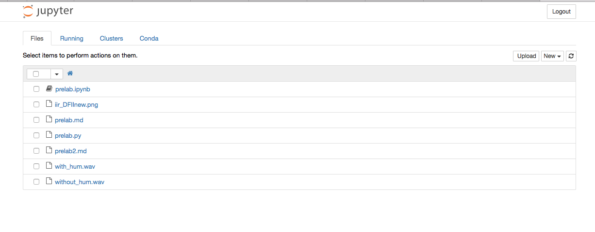

Prelab 2 - Notch filter design in Python
Download the with_hum.wav and without_hum.wav file to your computer. From the command line, type:
jupyter notebook
to open the jupyter notebook in your browser:

The notebook is used for quickly prototyping your ideas. It also supports inline plotting and Markdown/Latex documentation.
Inside the just-opened webpage, Choose New -> Python[default]. A jupyter notebook will be opened in a new tab.
Go to File->Rename and rename it to Prelab 2.
In the first cell in the opened notebook, type ls and press Shift + Enter. It should list all the file in your current directory.
Make sure that you are in the same folder where the wav files are stored.
To import the wave file, you might use:
from scipy.io.wavfile import read sampling_rate, data = read('with_hum.wav')
And to play the audio file:
from IPython.display import Audio Audio('with_hum.wav')
Play both wav files to see the difference.
Exercise 1
Plot the magnitude of the frequency response of the signal with the 400 Hz humming (with_hum.wav). You need to include this line at the beginning of the notebook to make the plot visible in the notebook:
%matplotlib inline
Hint
use numpy fft function.
Excercise 2
Design a bandstop filter to filter out the humming interference. Plot the magniture and phase of the frequency response of the filter.
Hint
take a look at butter and freqz functions from the scipy.signal module.
Excercise 3
Filter the 400 Hz humming interference out. Plot the frequency response of the filtered signal. Play the filtered signal again. You should hear the humming interference died out.
Hint
use lfilter function from scipy.signal module.
Tip
you can choose File -> Download as to save the notebook as a python file to debug in PyCharm.
Submission
Email your Jupyter notebook to your TA before the beginning of your lab section. Ensure that your notebook contains the following:
- A plot of the magnitude of the frequency response of the original signal (with the 400 Hz humming)
- A plot of the magnitude and phase of your bandstop filter's frequency response
- A plot of the magnitude of the frequency response of the filtered signal (with the 400 Hz humming canceled out)
- A brief discussion about your filter design. Why does your filter have the number of taps that it has? Could you achieve the same effect with less taps? What are the practical effects of using less taps?